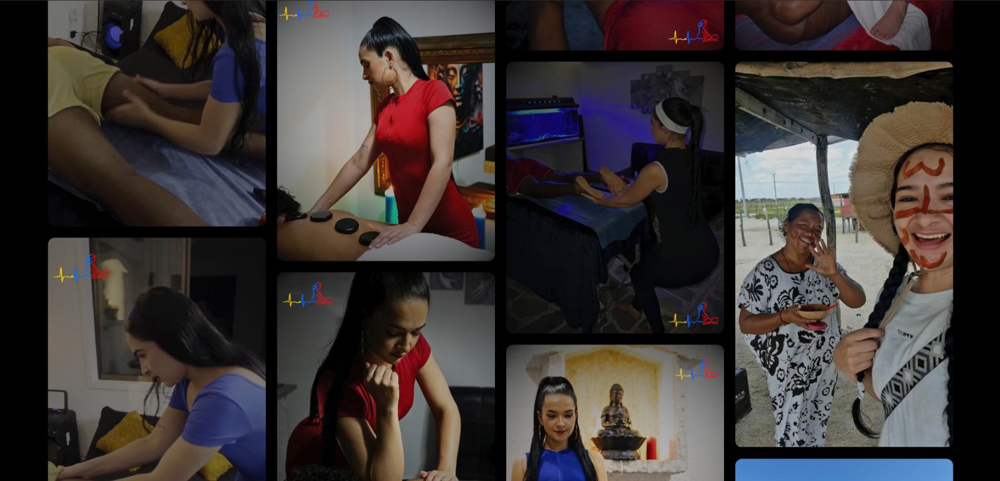
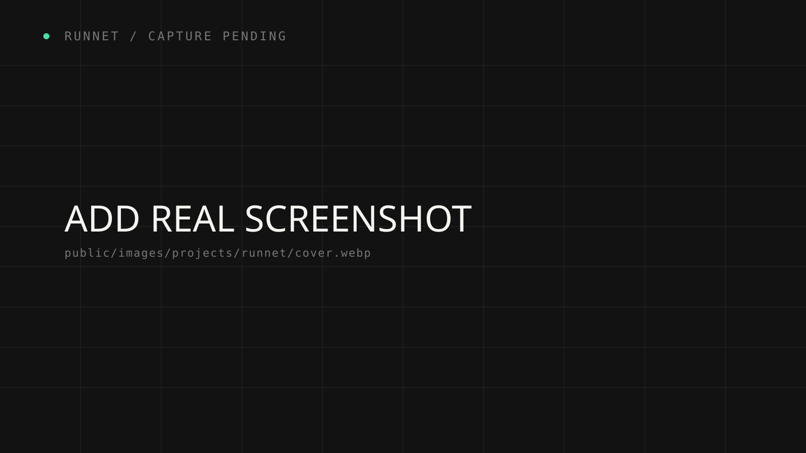
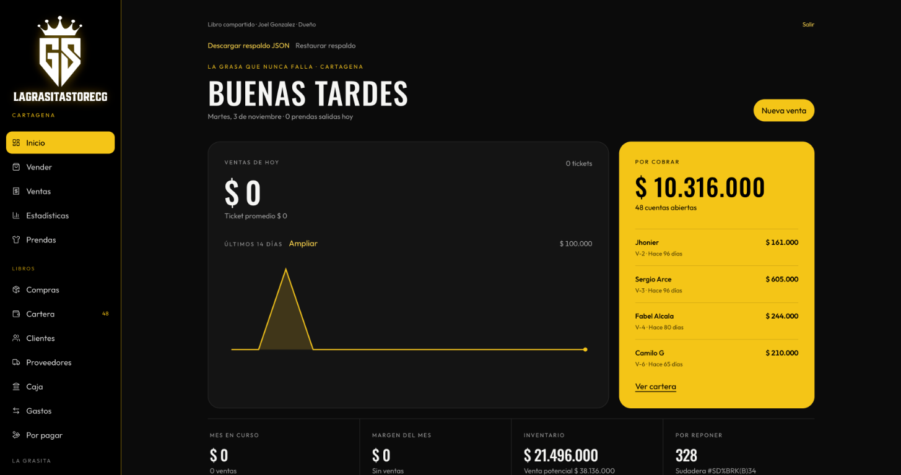

● LIVE BUILD / 01
● LIVE BUILD / 01
FOOTBALL
JERSEY STORE
Plataforma de gestión comercial y deportiva para Flashsports: camisetas de fútbol, piezas retro y ediciones de partido.
EXPLORE PROJECT ↗INGENIERÍA DIGITAL × DIRECCIÓN DE ARTE
Diseño y construyo productos digitales donde la arquitectura técnica y la sensibilidad visual se encuentran para crear experiencias memorables.
Convierto ideas complejas en productos claros, rápidos y con carácter.
Una selección de proyectos donde la ingeniería y el diseño se encuentran.
● LIVE BUILD / 01
Plataforma de gestión comercial y deportiva para Flashsports: camisetas de fútbol, piezas retro y ediciones de partido.
EXPLORE PROJECT ↗ ● EXPERIENCE SYSTEM / 02
● EXPERIENCE SYSTEM / 02
Plataforma digital de experiencias turísticas personalizadas: hospedajes, islas, yates y experiencias seleccionadas por expertos locales.
EXPLORE PROJECT ↗
● WELLNESS EXPERIENCE / 03Experiencia digital para terapias profesionales, bienestar y viajes energéticos diseñados a medida.
EXPLORE PROJECT ↗
● PUBLIC SHOWCASE / 04Muestra web para una empresa de mensajería, enfocada en presentar sus servicios y facilitar el contacto con nuevos clientes.
EXPLORE PROJECT ↗
● PRIVATE PROJECT / 05Aplicación web interna. La información del proyecto y las capturas se incorporarán en el case study.
EXPLORE CASE STUDY ↗Una mirada al proceso detrás de cada sistema.
El objetivo era convertir una tienda especializada en un sistema de venta y gestión preparado para crecer.
Problema → catálogo, stock y checkout desconectados.
Solución → una experiencia transaccional unificada.
Una herramienta para diseñar recorridos personalizados con contexto visual, mapas y reservas.
Problema → demasiadas opciones sin una narrativa clara.
Solución → un itinerario flexible, visual y humano.
Un sitio editorial para presentar terapias, servicios y experiencias turísticas energéticas con una ruta clara hacia la reserva.
Problema → comunicar múltiples servicios sin perder cercanía.
Solución → contenido estructurado, narrativa personal y contacto directo.